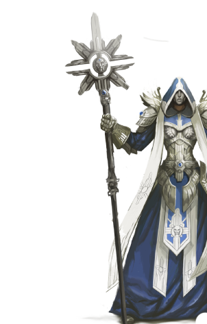

Альянс Света
Священная Империя – теократическое государство, на страже которого стоят рыцари и монахи. В империи поклоняются Эльрату, Дракону Света, который дарует им силу магии своей стихии. Цель Империи – жить и стремиться к идеалам Эльрата – Правде и Чистоте, изменять мир в соответствии с ними и нести в него священный Свет.
Другие имена: Рыцари Света
Основные цвета: Небесно-голубой, белый и золотой
Страна/Королевство: Священная Империя
Столица: Гнездо Сокола, позднее – Коготь
Религия
Основу населения Священной Империи составляют люди, которые отвернулись от своего покровителя Илата, Дракона Воздуха, и начали служить Эльрату, Дракону Света. Так как Ангелы практически уничтожены, народ Священной Империи является самым многочисленным из поклоняющихся Эльрату.
Магия
Люди Священной Империи пользуются поддержкой немногих оставшихся в живых Ангелов и молятся Эльрату о сотворении чуда или благословении. В отличие от Ангелов, которые с рождения наделены способностью к Магии Света и приверженностью принципам Правды, Справедливости и Совершенства, магическая сила людей зависит от того, насколько сильна их вера.